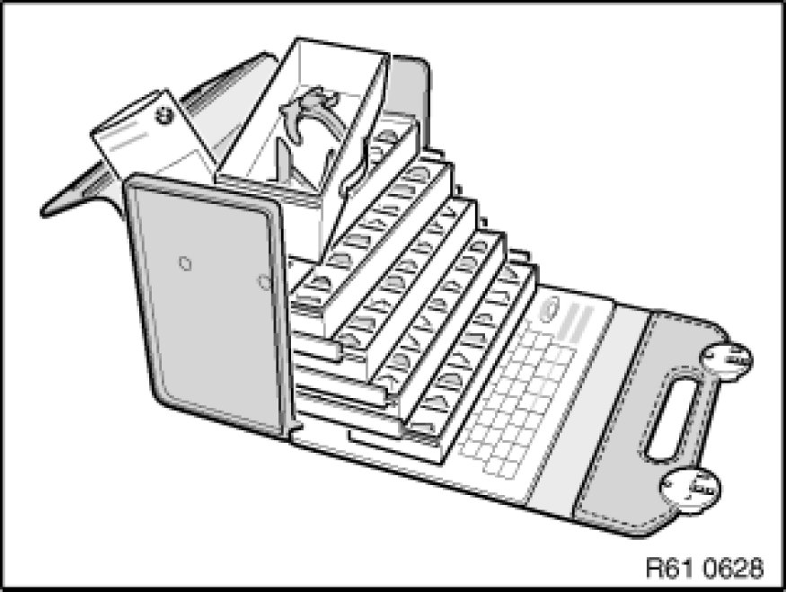
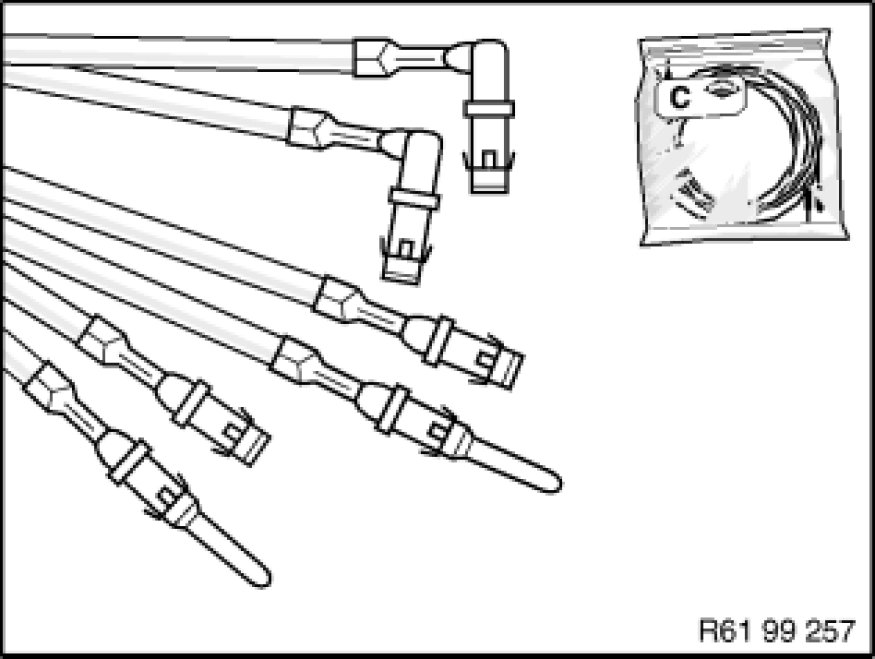
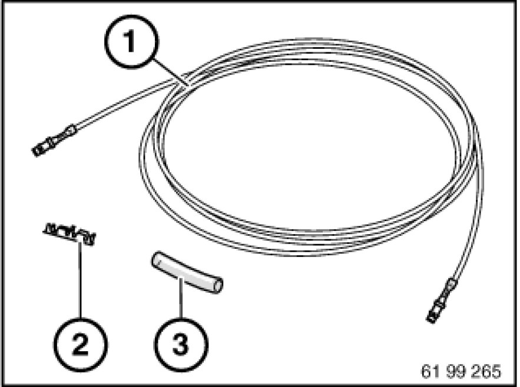
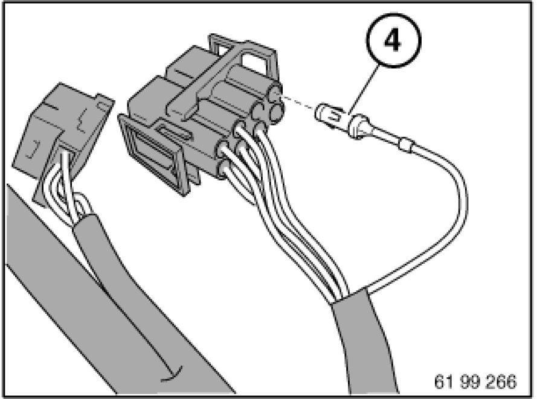
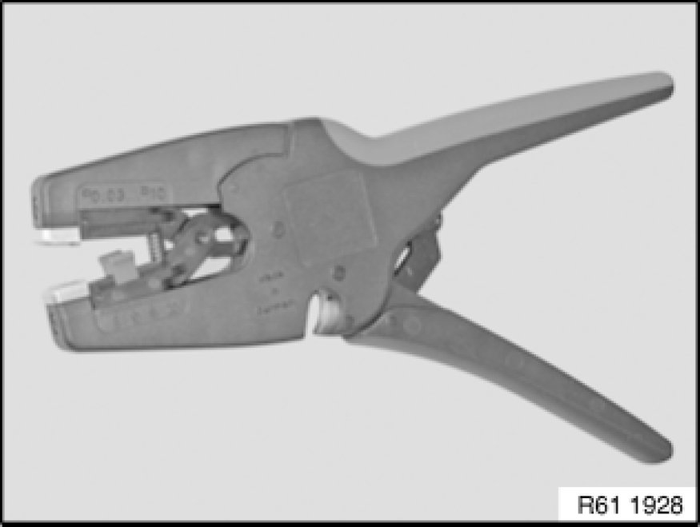
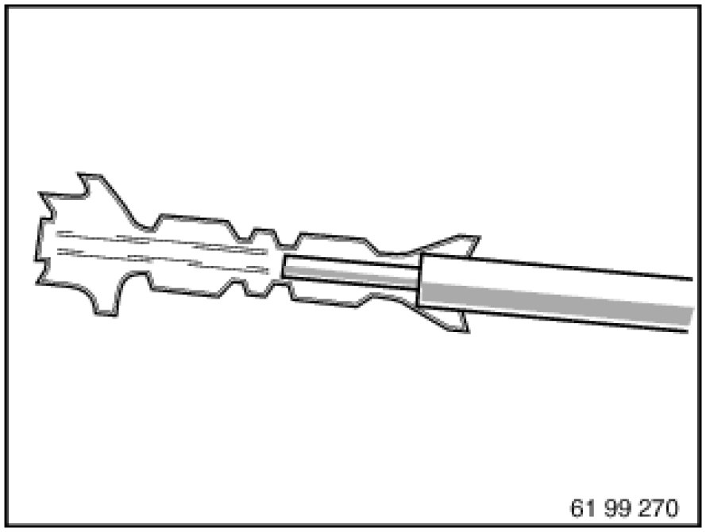
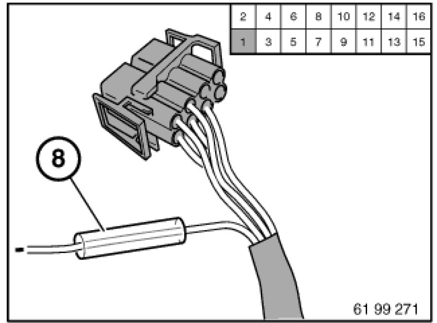
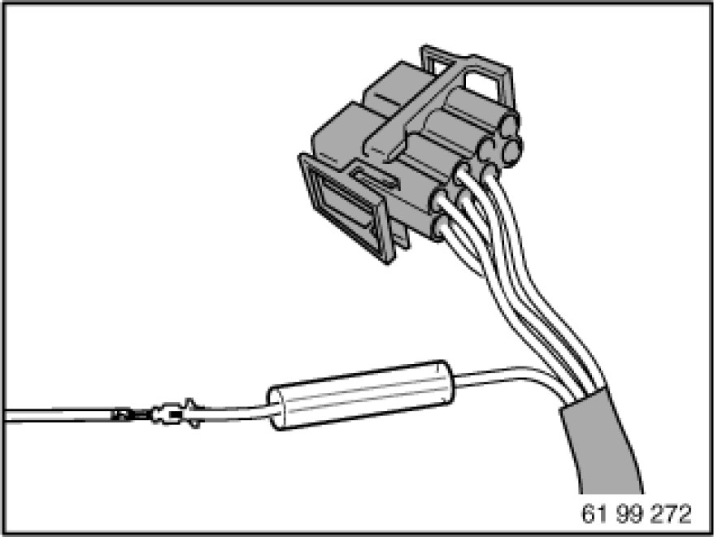
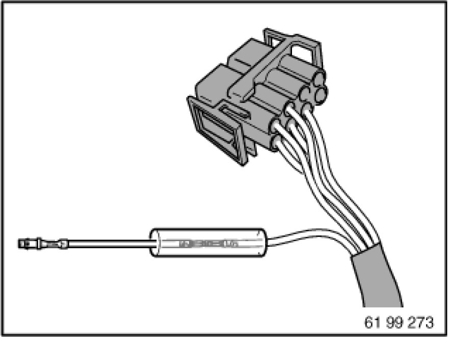
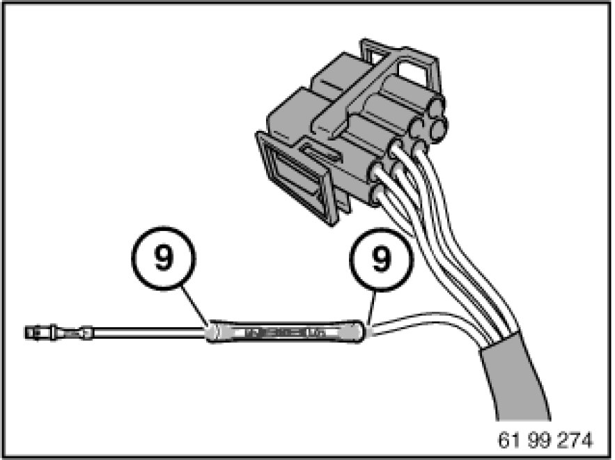

61 13 ... Butt Connector For Repairing A Plug Connection
61 13 ... - Butt connector for repairing a plug connection

Special tools required:
- 61 0 300 61 0 300 Releasing Tool (Complete Kit)
- 61 9 040 61 9 040 Set of Tools for Repair Kit IV

Important!
1. Identify cause of damage (e.g. sharp-edged body parts, faulty electrical loads, jammed mechanisms, corrosion caused by ingress of water, etc.).
2. Read out fault memory
3. Eliminate cause of damage.
4. Disconnect battery negative terminal
5. Make sure that no safety-related system according to connection scheme (e.g. anti-lock braking system, active rear-axle kinematics, airbags, etc.) are influenced. Otherwise replace faulty wiring harness or use repair cable (sourcing reference: BMW Parts Service)
6. Carry out function test and read out fault memories again
7. Eliminate new faults if applicable and clear fault memories

Note:
The repair range IV for vehicle electrical system contained the required special tools and individual parts for retrofitting and repair work with the aid of fan connectors.
The case can no longer be ordered. Order individual parts for wiring harness repair through BMW Parts Service.
- Refer to Service Information:
SI 02 04 07 341
Special tools:
- special tool 61 9 040 61 9 040 Set of Tools for Repair Kit IV

Choose repair kit.
Example: Repair kit, circular plug system D 2.5.

Remove following parts:
(1) - Prepackaged end of cable with requisite wire cross-section
(2) - Crimp connector for selected wire cross-section
(3) - Shrink-fit hose

Open secondary lock on housing.
Mark damaged contact (4) with socket number of housing and press it out of housing using relevant special tool contained in special tool kit 61 0 300 61 0 300 Releasing Tool (Complete Kit).
Refer to repair instructions:
Opening plug housings and removing contacts 61 13 ... Opening Plug Housings and Removing Contacts of Different Plug Systems of different plug systems

Important!
- Check maximum length of repair cable
- If more than one wire is to be repaired, the individual interfaces must be offset so that the wiring harness is not too thick at the repaired point.
Observe following procedure:
- Cut off wire with faulty contact at point which is easily accessible
- Strip insulation from end of wire at wiring harness end
- Cut preassembled wire end to length and strip insulation
Refer also to repair instruction:
Cutting to length and stripping insulation from cables 61 13 ... Cutting to Length and Stripping Insulation From Cables

Crimp butt connector on preassembled wire end.
Refer to repair instructions:
Crimping on stop parts 61 13 ... Crimping Stop Parts

Push shrink-fit hose (8) onto free wire end.

Crimp unused wire end to butt connector.

Pull shrink-on sleeve over butt connector.

Important!
Do not burn shrink-on sleeve.
With hot air blower, shrink the shrink-on sleeve on both sides (9) of shrink-fit hose until glue emerges uniformly all round.
Insert contact in housing.
Close secondary lock on housing.